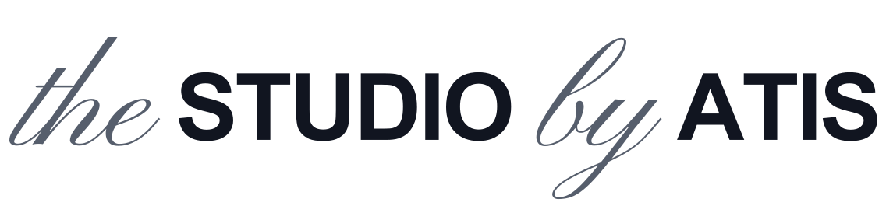
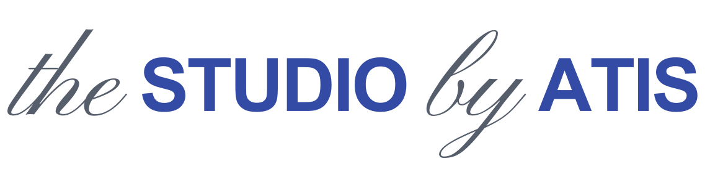
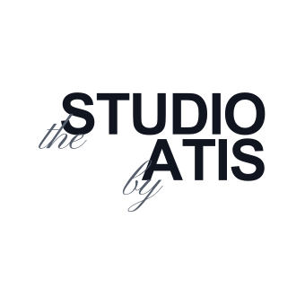
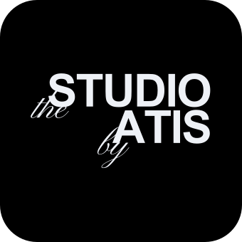
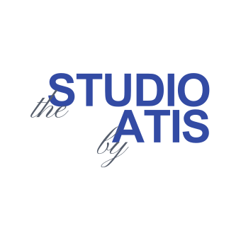
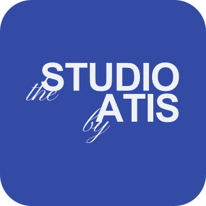

Manual de identidad visual de The Studio, by Atis. Campos de color a sangre, rejilla de 12 columnas, islas de plata.
Todo lo necesario para que cualquier persona o agente produzca web, posts y documentos con una misma voz visual. serio, pero con carácter.
Personalidad
Somos el tío que sabe: rebelde en el tono, pero que da confianza desde la sabiduría. Diseñamos para un público racional que teme que le engañen — así que transmitimos seriedad y orden primero, y la rebeldía vive como acento, no como estridencia.
Logo
Construcción: the y by en la manuscrita (siempre en plata); STUDIO y ATIS en Helvetica Bold mayúscula. Versión definitiva: vectorizado (paths reales extraídos de Arial Bold + Pinyon Script — no depende de tener ninguna fuente instalada), en 4 variantes de color oficiales (cerradas 2026-07-10, sustituyen a cualquier versión anterior de este manual).
Horizontal · principal



Variante de perfil (foto de perfil, favicon, sello): vertical y alineada a la derecha, "STUDIO" arriba y "ATIS" abajo, "the"/"by" pisando la base de cada palabra en diagonal — de forma que si lees solo la Arial, lees STUDIO / ATIS alineado a la derecha.




* El fondo negro puro es una excepción explícita del founder a la regla general "el negro nunca es fondo" (ver §4) — vale solo para esta variante del logo, decidida el 2026-07-10. En cualquier otro uso, el negro sigue siendo solo tinta de texto.
- Aire alrededor ≈ la altura de la "S" de STUDIO.
- Usa siempre una de las 4 combinaciones oficiales de arriba — no se inventan mezclas nuevas.
- No lo rotes, deformes ni cambies proporciones.
- No pongas "the/by" en Arial ni cambies las tipografías.
- No uses fondo plateado (se descartó — no queda bien).
Tipografía
Solo dos familias, nunca más.
Color
Actualizado 2026-07-15 (v5, sustituye al fondo único): la página se divide en campos de color a sangre — cada sección es un color completo, y el color hace el trabajo de separar contenidos. Manda el azul Atis #334BA4 (el vivo, no el marino). Regla de uso: azul = marca y acento, secciones de texto corto; claro/blanco = donde hay lectura larga (leer párrafos sobre oscuro fatiga la vista); plata líquida = campo propio con textura animada, nunca banda vacía de relleno; navy #0B1230 = reservado al pie. El orden va de claro a oscuro según se baja. El negro sigue sin ser fondo (excepción de siempre: el logo sobre negro).
design/plata/islas/ y public/plata/.#565E6C. Sobre oscuro → plata clara y brillante #EEF1F7. Aplica a resaltados, logo y cualquier detalle. Se usa como color sólido (los gradientes recortados sobre texto fallan en muchas herramientas).Maquetación y párrafo
- Rejilla de 12 columnas (actualizado 2026-07-15): el layout es la rejilla, no una guía decorativa. Todo bloque empieza y termina en una línea de columna.
- Texto justificado siempre.
- Interlineado de cuerpo ≈ 1.6.
- Jerarquía: kicker (azul mayús) → título (Arial bold) → cuerpo (regular) → resaltado (Arial negrita plata).
- Tarjetas a sangre: de borde a borde de la pantalla, sin aire alrededor; la sangría vive dentro de cada celda. El enunciado de un grupo de tarjetas es una celda más de la misma retícula, nunca un título suelto flotando encima.
- No coloques nada "a ojo": si no cae en una línea de la rejilla, está mal.
- No mezcles más de dos tipografías.
- No dejes un bloque de texto a un lado con un hueco enorme al otro: equilibra o céntralo.
Componentes
Botones de cristal (liquid glass): translúcidos y flotantes, con sombra azulada y sin borde — el borde estorba; el cristal se define por el brillo interior y la sombra, no por una línea. Iconos minimalistas: sin caja, solo el trazo en plata líquida, y siempre redondeados, sin picos ni ángulos (círculos y curvas, nunca vértices).
- Tarjetas (actualizado 2026-07-15): esquinas en pico, sin redondear — sustituye a los "radios generosos". Van a sangre y se separan entre sí con una línea fina de 1px, como celdas de una retícula.
- Iconos: sin caja/contenedor, trazo fino en plata líquida, formas 100% redondeadas. El pico es para las cajas, la curva para los iconos.
- Fondos (actualizado 2026-07-15): campos de color planos a sangre (ver §4), uno por sección. Sustituye al lienzo degradado único. El liquid glass sobrevive en la plata líquida: un campo con textura plateada que se mueve lenta y continuamente (desactivada con reducción de movimiento). Referencia Capi Cabrera / portada de "El Baifo" de Quevedo (abstracción geométrica + paleta volcánica + formas orgánicas del paisaje canario), que además pinta el objeto protagonista de la home.
Voz y copy
- “Tu negocio ya vale. Vamos a que se note.”
- “No te vendo humo. Te enseño a dejar de perderlo.”
- Cercano, claro, con ironía y sin tecnicismos.
- “Estrategias omnicanal de alto impacto para maximizar tu ROI.”
- Promesas grandilocuentes o jerga vacía.
- Tono corporativo frío o provocación gratuita.
Checklist para agentes y empleados
- Solo dos tipografías: Arial + la manuscrita (Pinyon Script).
- Títulos en Arial Bold; cuerpos regular justificado (1.6). Mayúsculas solo en rótulos cortos (2-5 palabras), caja normal en titulares largos.
- Resaltados en Arial negrita + plata + 1pt; subtítulos en Arial cursiva. Manuscrita solo para logo y decoración.
- Plata adaptada al fondo (sólida): oscura sobre campos claros, clara sobre campos azules y el pie.
- Campos de color a sangre (actualizado 2026-07-15): azul Atis manda; claro donde hay lectura larga; plata líquida como campo con textura; navy solo en el pie. De claro a oscuro al bajar.
- Rejilla de 12 columnas: todo anclado a las líneas. Tarjetas a sangre y con esquinas en pico.
- Islas de plata solo con función (hover, marcar un dato, cruzar campos), nunca decorativas sueltas ni tapando texto.
- Botones de cristal sin borde; iconos sin caja, en plata líquida y siempre redondeados.
- Tono del tío que sabe: demostrar, no prometer.
The Studio, by Atis · Manual de identidad visual v5 (campos de color, rejilla de 12, esquinas en pico, islas de plata — actualizado 2026-07-15) · Canarias